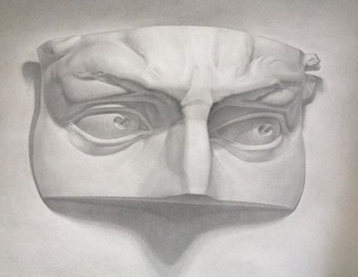
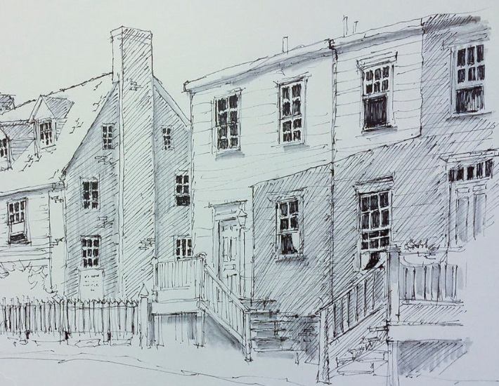
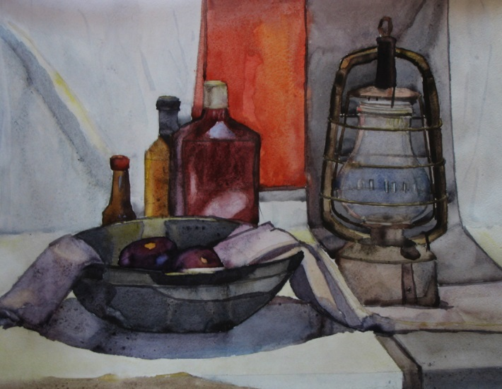
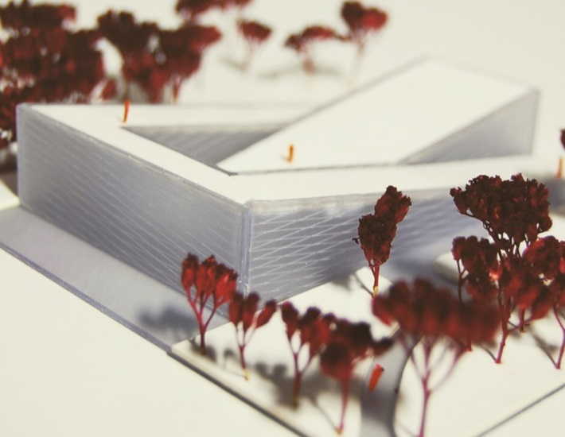
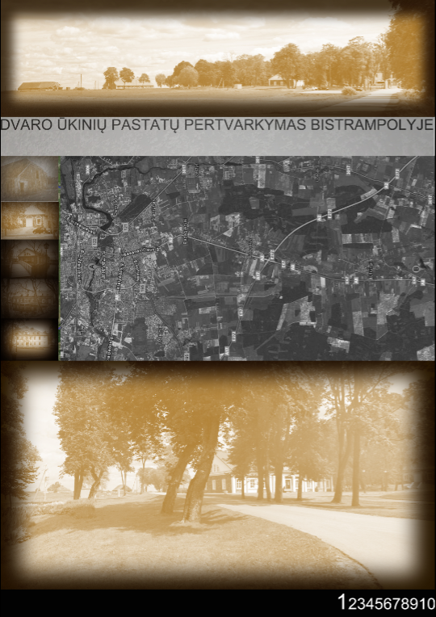
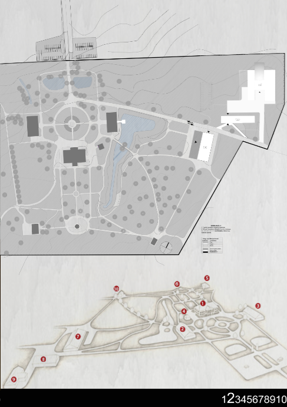
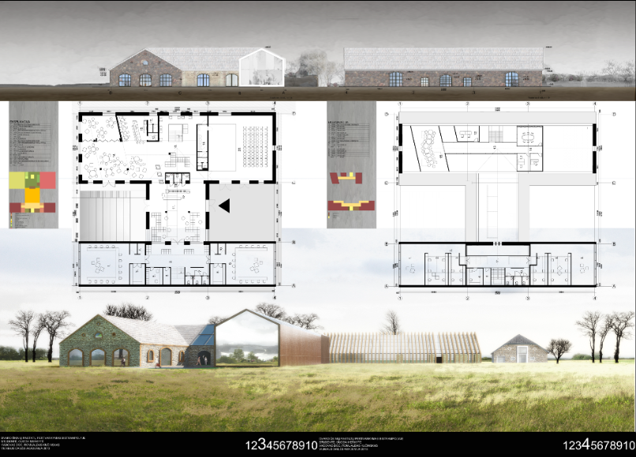
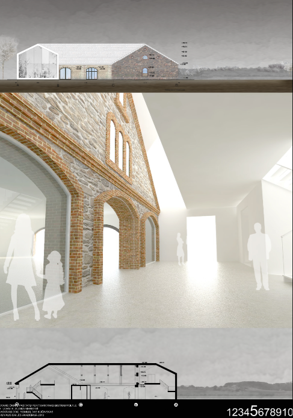
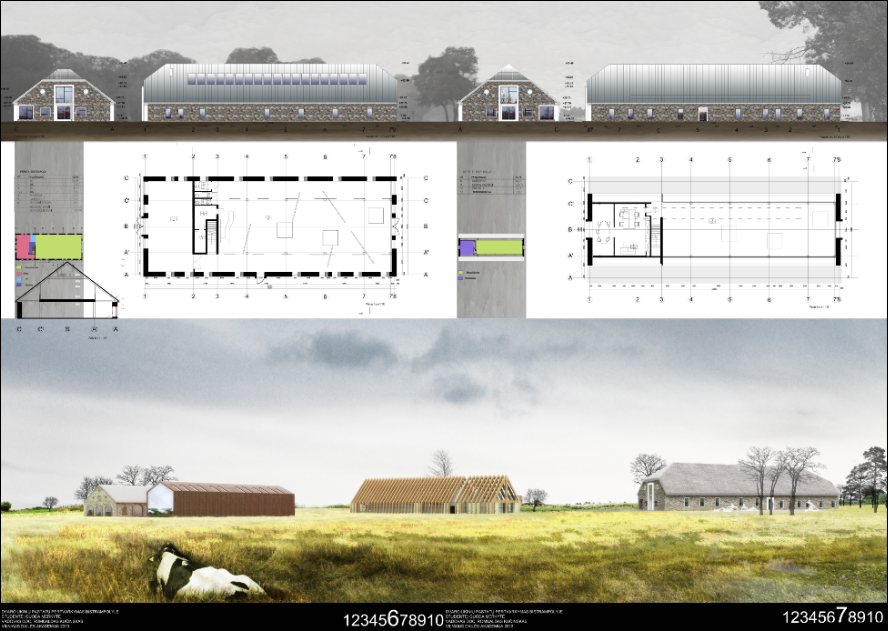
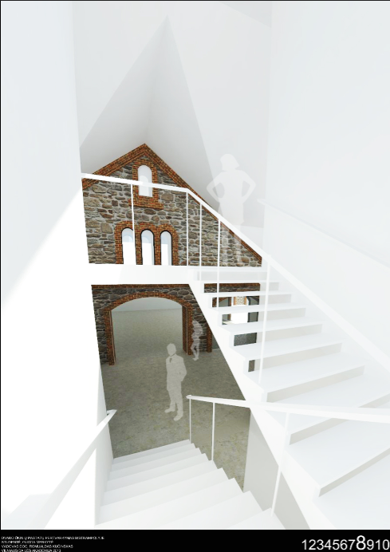

Who am I?
Guoda is my name and positive, flexible and hardworking is what I am.
Someone who is accurate and able to prioritize time, as well as who can work under pressure.
Skills
- PhotoShop
- AutoCad
- SketchUp
- Revit
hello
my name is
Guoda
Guoda is my name and positive, flexible and hardworking is what I am.
Someone who is accurate and able to prioritize time, as well as who can work under pressure.
I like to play with colors, techniques and different perspectives... drawing carries thoughts and ideas into reality.
Painting with watercolors, sketching are freehand drawings letting see reality in other colors rather than describing things as they are...
My inspiration is nature, trips...






Cultural Heritage Department only about 14% of Lithuania mansions are renovated and "resurrected" for a new life.
Therefore estates renovation is very actuality theme, examination of which must take into account the interests of many, and the possibilities for their impact on environmental management.
Only when the renovation project ideas generated can be adequately understood.

Bistrampolis Manor is one of the many abandoned cultural heritage objects.
We will look at how they can be adapted to the new function manor outbuildings.


